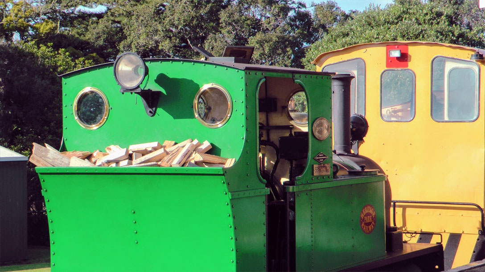
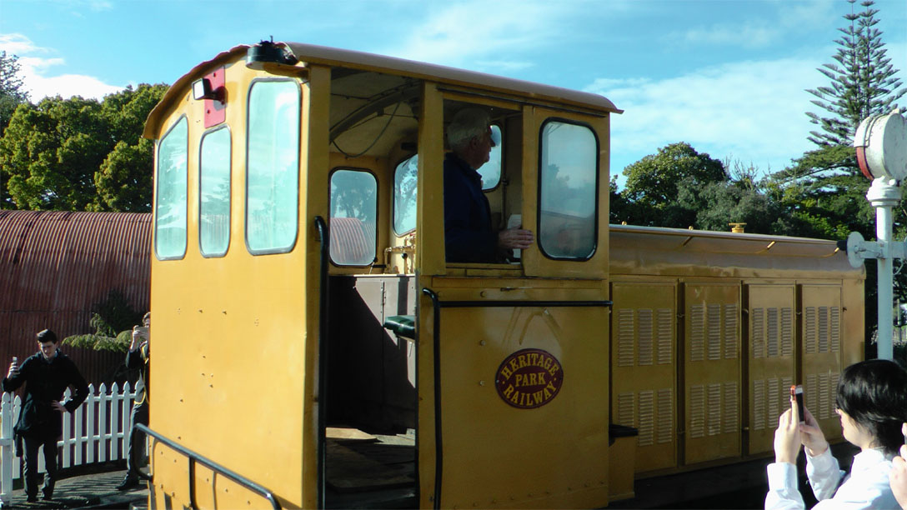
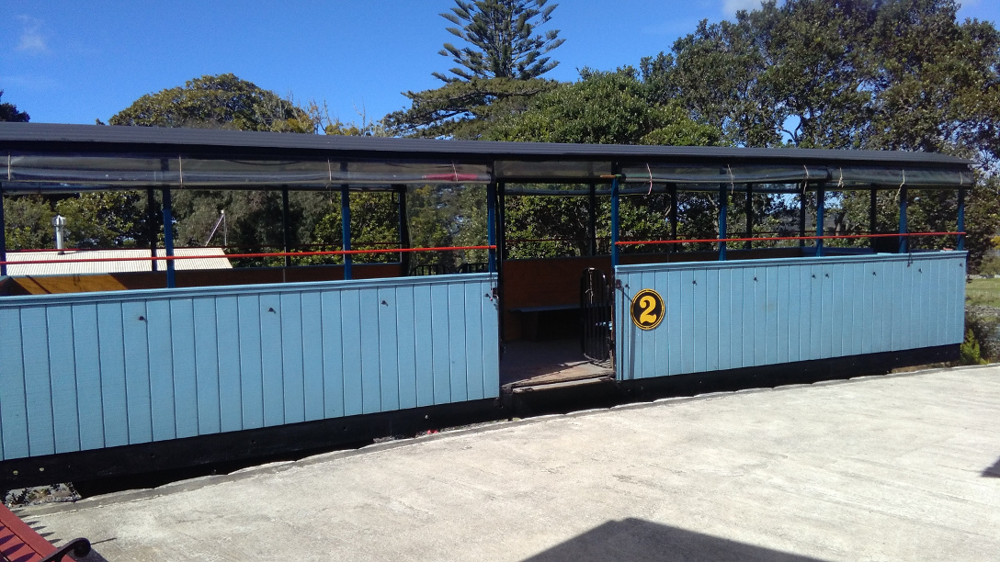

Trains and Locomotives
From when the first track was laid in 1977, up until the present day, Heritage Park Railway have acquired a large and varied collection of trains, trams, and other locomotives from all over Northland.
These locomotives, now restored by our volunteers, can be seen in the gallery below:



Seymour (green steam loco):
- 0-4-2 wheel arrangement
- Built 1955 by Peckett and Sons, Bristol, England
- It was the last new steam locomotive to be imported into New Zealand
- It worked at Portland cement Works, Whangarei and was donated to the club in 1978
- It was reboilered and given an extensive overhaul in 2007
- It operates every third Sunday and other museum live days or special occasions
- Weight: 12 tonnes
The Price: works number 200.(Yellow diesel):
- Built by A & G Price of Thames, New Zealand in 1961 for Pacific Steel
- Subsequently sold to Ballance Fertilisers, Whangarei who donated it to us in 2004
- Powered by 104 HP Gardner diesel
- 0-4-0 wheel arrangement
- Weight: 18 tonnes
Other Vehicles:
- The railway has a bogie carriage, built by the club, for normal passenger work
- We also have two four wheel ex cattle wagons which used to carry passengers and are still able to be used
- The club also has a flat wagon and a large four wheel ballast wagon
- These are used for general work around the site
- Also on site are a 30tonne Bagnall 0-6-0 diesel loco minus motor and derelict Peckett steam loco,which was rescued from a Tarewa Road play park about 1990
Johnny (blue diesel):
- Built 1961 by Drewry of London, England
- 0-6-0 wheel arrangement
- Power: 104HP Gardner diesel
- Came from Portland Cement Works, Whangarei about 1990
- Weight: 12 tonnes
Union Foundry (small blue diesel):
- 0-4-0 wheel arrangement
- Came from Ballance Fertilisers in about 1999
- It weighs about 5tonnes and is used as a work loco around the site.
Trams
Two trams came from Henderson about 2013. They originally worked in Lisbon, Portugal on a narrow gauge track.
One has been extensively rebuilt and regauged to our track. It could be operating by mid 2017. It operates with two 600volt DC motors which will be powered with a diesel generator.Other vehicles on site
- Bogie passenger carriage
- 2 x4 wheel passenger carriages
- Flat wagon 4 wheel
- Ballast wagon YC 1602
- Two trams ex Lisbon, one being restored and the other stored.
Model Trains
There are two models operating one in the Hikurangi station and one in the club rooms.
The club room layout has four tracks and a variety of trains operating.